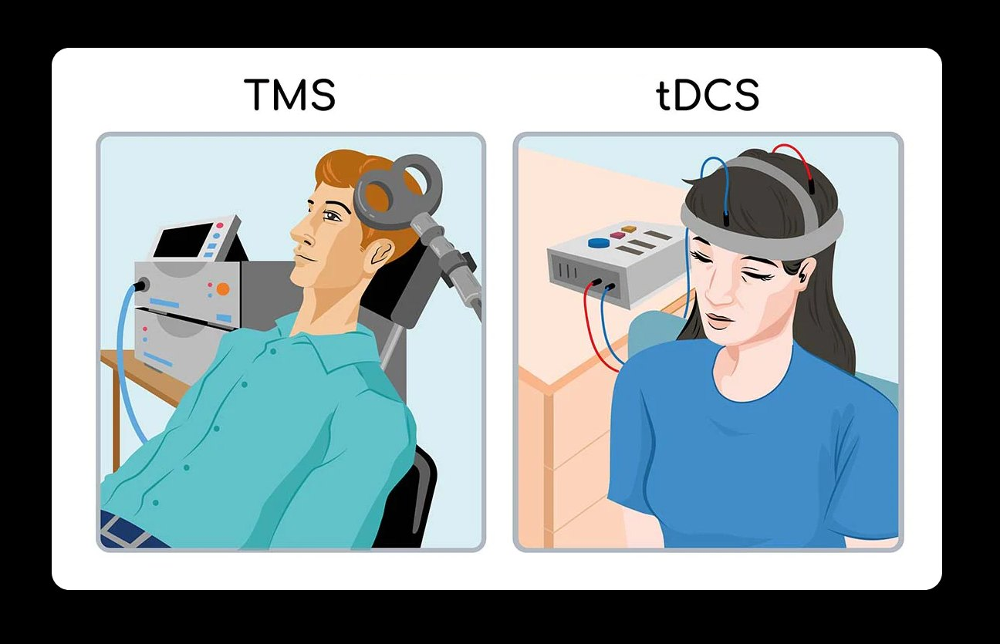

Bienvenido a nuestro consultorio
Somos un centro especializado en tratamientos innovadores para ansiedad y depresión. Utilizamos tecnología de neuromodulación no invasiva, como Estimulación Eléctrica Transcraneal (tDCS) y Estimulación Magnética Transcraneal (TMS), en un ambiente profesional, cálido y personalizado.
Contamos con un equipo interdisciplinario experto en salud mental y neurociencia.
Nuestro equipo interdisciplinario
¿Por qué cuidar tu salud mental?
La salud mental es vital para tu bienestar general. Nuestro enfoque combina ciencia, tecnología y atención humana para ayudarte a recuperar el equilibrio emocional.
- Tratamientos sin medicamentos para reducir efectos secundarios
- Sesiones personalizadas y acompañamiento integral
- Mejora de la concentración, sueño y estado de ánimo
¿Te gustó esta página?
